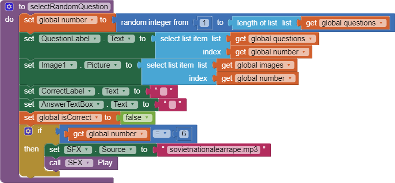
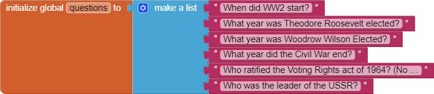
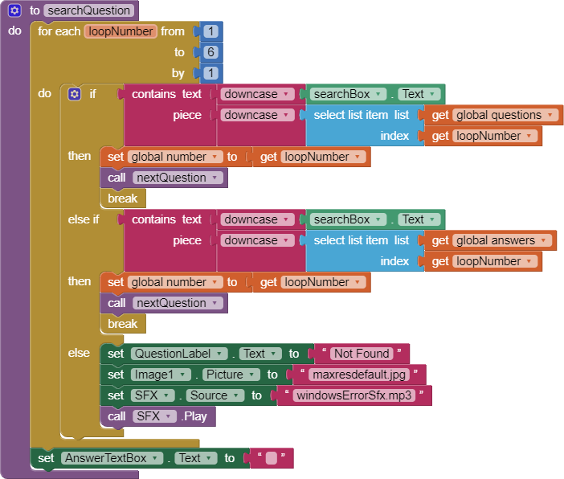
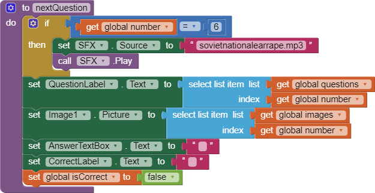

Chapter 5 Questions
Unit 5.2
1. Include a screenshot of an interesting design that your Logo app made and a screenshot of the code that created it. Press the power button and volume down at the same time to take a screenshot. Include this image and code in your write-up document, below.
Link for the question2. Describe in your own words, with a specific example from Logo, how our choice of abstractions (commands) in this lesson provides us with the ability to solve problems that couldn't be solved with the abstractions (commands) used in Logo Part 1.
My choice of abstractions in the lesson help us solve problems we couldn't before since we have an increased arsenal of commands that we would use. Instead of limiting to only 90 degree turns, we can now make 45 degree turns which allow for an expanded range of shapes that we could make.
Unit 5.3
1.(POGIL) Define a pseudocode algorithm that will efficiently play the guessing game.
Set min to 0 Set middle to half of the max While middle is not the target If middle is higher than the target Set max to equal to middle Else Set min to equal to middle Set middle to half of min + max Print number
2.(POGIL) To guess a number between 1 and 100, what's the maximum number of guesses your algorithm would take?
The maximum number of guesses is 7 because 2^7 is 128 and 100 is less than 128.
3.(POGIL) To guess a number between 1 and 500, what's the maximum number of guesses your algorithm would take?
The maximum number of guesses is 9 because 2^9 is 512 and 500 is less than 500.
4.Suppose you have a deck of cards and you want to find the Ace of Spades. If the deck is shuffled, which is the best search algorithm to use and why?
Linear would be the best search algorithm because it can find cards that are randomized in a deck instead of ordered easily compared to binary.
5.Give an example of a search problem you encounter in everyday life. Does it use sequential, binary, or some other search algorithm?
A search problem that we encounter everyday is finding where you put and object. If you keep everything organized, it is binary search, but if you have a messy room, it is linear search.
Unit 5.4
1.Bubble and Merge Sort are referred to as comparison sorts because the values of the two pieces of data are compared during each step. Why are the radix and bucket sort not comparison sorts?
Radix and Helix sorts are not comparison sorts because they place each value depending on the value of the card. This is not comparing to other cards in the deck.
2.Which sort do you think would be the fastest if you had to sort more than one deck of cards? Why?
Bucket sort would be the fastest because it organizes each card into its own pile which makes it easier to sort once finished.
Unit 5.5
1.Describe the significance of the global variable index. How is indexing used with lists in this app?
The indexing used with lists in the app allows for us to use only one variable to select the item inside all the lists that we need.
2.Describe how parallel lists were used in this app. Why was the parallel structure of the lists necessary?
Parallel lists were used in the app to make it easier to grab all the information for a specific question and display it onto the screen.
3.Include screenshots of your code for exercises 2 and 3 from the Enhancements section.

4.Include a screenshot of the code that added your extra question (exercise 4). Explain why the code for the buttons worked without any changes after the addition of the extra question.
The code for buttons works even after adding more questions because a number global variabal cycles through the length of the list and displays the data onto the screen.
Unit 5.6
1.Describe your solution for the second project that added a Search button. Provide a screenshot of the search button click code that uses a complex algorithm with loops and lists. Why was a loop necessary?
A loop is required for the solution because you need to check each item in the lists that are available to find an item that matches what the user is searching.
2.Write AP text-style pseudocode for a linear search that searches through a list to find an item x. It should display found if the x is equal to an item in the list.
repeat n times if x = list.n x ← list.n
3.Give brief descriptions of the enhancements you added to your app for the third project, a quiz topic of your own choosing. Provide screenshots of important blocks and describe how you used them to solve certain programming problems.
The enhancements we added into my app is the playing of the soviet nation anthem when the question related to the topic on the quiz. In the image, we used the screen initialize block to solve the problem of having nothing to display on the screen when the user first opens up the quiz app.
4.To practice for the Create project prompt, grab a screenshot of a program code segment from your project that implements an algorithm that includes two or more algorithms within it and includes mathematical and/or logical concepts. An ideal algorithm is a procedure that you created that includes calls to other procedures that you created, where at least one of those includes math or logic (ifs or loops). Describe how each of the two algorithms within the bigger algorithm functions independently as well as in combination to form a new algorithm.
The code segment is an algorithm because it changes what the user sees on the screen into the new question that is presented. Within it, there is another algorithm that plays audio depending on the number the question variable is on.
Unit 5.7
1.Present the results and the analysis you did for each of the experiments in this lesson, -- i.e., the table of running times you observed, the graphs you created, and the conclusions you reached regarding the searching algorithms and sorting algorithms. Provide a clear description, referring to your graphs and your tabulated data, to explain how you arrived at your conclusions.
Link for the data.From the data that we collected about the search and sorting algorithms, I concluded that for search, 1 is linear search while 2 was binary search. I arrived at the conclusion by looking at the time it took to search for each different list. Binary is quicker than linear at this job which is why it finished quicker. For sorting, we concluded each sort depending on the time that the sort took. This meant that sort 2 was merge, sort 1 was bubble and sord 3 was bucket
Unit 5.8
1.(POGIL) A password scheme consists of a minimum password length and the different types of symbols (i.e., letters, numbers, specials) that can be used in the password. Using the Password Strength Calculator, determine the optimal scheme for withstanding a brute force attack of at least 10 years by an ordinary PC performing 100 million tests per second.
We need upper case letters, lower case letters, and numbers in the password. The password also needs to have at least 9 characters.
2.(POGIL) According to this 2012 article, a password-cracking computer can try 350 billion passwords per second. How would you have to modify your scheme to withstand a 10-year attack by this specially designed computer?
We need upper case letters, special characters and numbers in the password. The password also needs to have at least 11 characters. It needs 17.9 years to crack.
3.(POGIL) That article was written in 2012. Password cracking technology has probably gotten a lot better. Suppose the number of passwords that can be checked per second doubles every year, use the Password Strength Calculator to determine an optimal password scheme for the year 2020?
Since it doubles every year, it has doubled 8 times in 2020. It can check 89.6 trillion passwords per second. We need a scheme that has a length of 12 characters, and include upper case, lower case, numbers, and special characters. It would need 216.8 years to crack.
4.(POGIL) For the routes starting and ending at Trinity College, identify the nearest neighbor route and the optimal route. What does this show you about the nearest neighbor heuristic?
The nearest neighbor heuristic would produce a route that go for first A, then B, and last C. It takes 8.2 miles to finish the trip.
Unit 5.9
1.How do web search tools make it more efficient to find information?
Web search tools make it efficient to find information as all the informations someone needs can be found with a few words and a button click. Unlike before where information was passed down by humans or in books which makes it tedious to look throught.
2.When you type a word or phrase into the Google search engine, what is the search algorithm that is being used? Explain in your own words the process used by Google's search engine.
When I type a phrase into the Google search engine, it is using the page ranking algorithm to determine what shows up in the search bar. The most searched phrases for each keyword are displayed into the search bar for the user to see.
3.What is a captcha? How has the collective efforts of Internet users contributed to analyzing images through captchas?
Captcha is an anti robot checker for online websites to prevent robots from loggin into accounts. Internet users have provided data for robot detection over time by solving each captcha in certain periods of time.
4."The architecture of human knowledge has changed as a result of search." Do you agree? Explain your reasoning.
Human knowledge has changed as a result of search because instead of trying to solve the problems themselves, we have become more reliant on searching up the answers online without any thought.
5.What are the differences between Figures 4.10 and Figure 4.11 in the book? Why are there differences even though they are both a Google search results page?
The differences between the two images in the book are the results based on the country where the search was made. This is most likely due to a different database used in China compared to the US.
6.How do you think mobile computing might have influenced web searches?
Mobile computing might have influenced web searches because a small piece of technology could access all the information online which would make people want to develop their in web searching.
7.Would you retain your search history or delete it? Why?
I would retain my search history because it allows for me to quicky access the websites that I previously accessed before and not waste my time trying to find the website again through searching.
8.Should a researcher place absolute trust in a search engine? Why or why not?
A researcher would not place absolute trust in a search engine because the information presented is not always reliable and trustworthy.
9.The authors claim "search is a new form of control over information" (p. 111) and "search is power" (p. 145). Why might it be important to talk about the social implications of searching on the Internet?
It is important to talk about the social implications of searching as it allows everyone access the same information which allows anyone to study what they want to do in the future.
10.How have search trends been used to predict information? What are the positive and negative impacts of using trends to make predictions?
Trends are used to predict information as it allows for us to prepare for the future. It can be positive as it allows preparation of the future instead of a surprised result for everyone. While trents making predictions can be usefull, they can also be incorrect and make people panic over wrong information that was created from trends.